Our Team
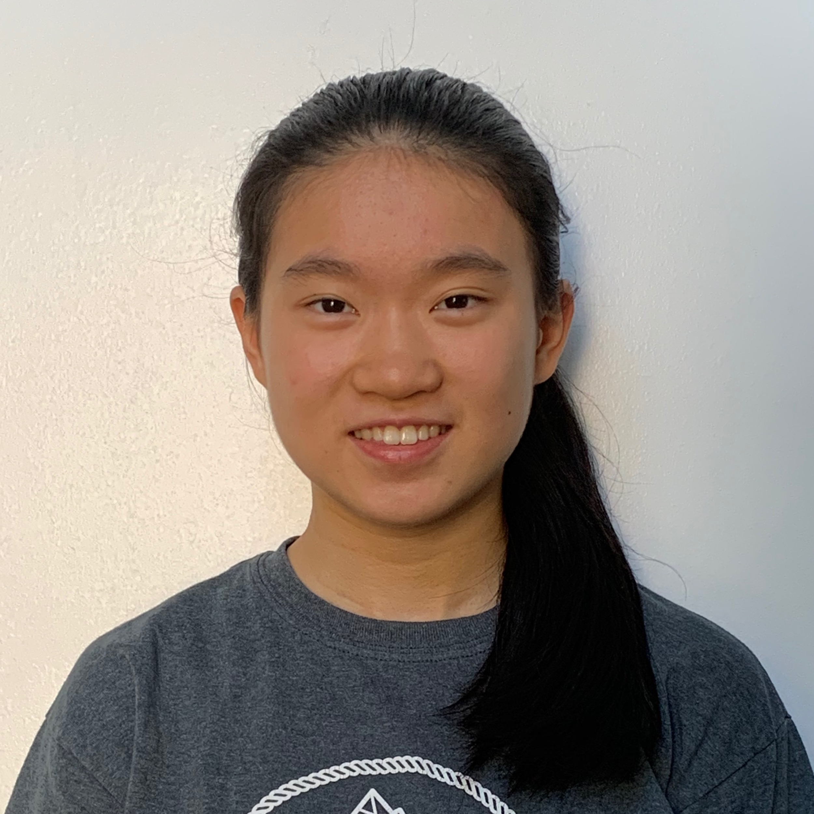
Jenny
Jenny is a junior at Princeton Day School. She is passionate about diversity, equity, and inclusion, especially in STEM opportunities. She is interested in problem solving, math, and science. She has experience in MATHCOUNTS, Math League, and AMC 8, 10, and 12. She has competed in Science Olympiad for 4 years and is also a 2020 USAPhO qualifier. In her free time, she enjoys playing the clarinet and making origami.

Hannah
Hannah is a sophomore at Princeton Day School, where she is a member of the Mathletics team. She has also participated in the AMC 10 and state/national level Math League contests. She especially enjoys Algebra and creative problem solving. Her favorite subjects are English and math, and outside of school she is an avid reader, a tennis player, and a self-taught guitarist.
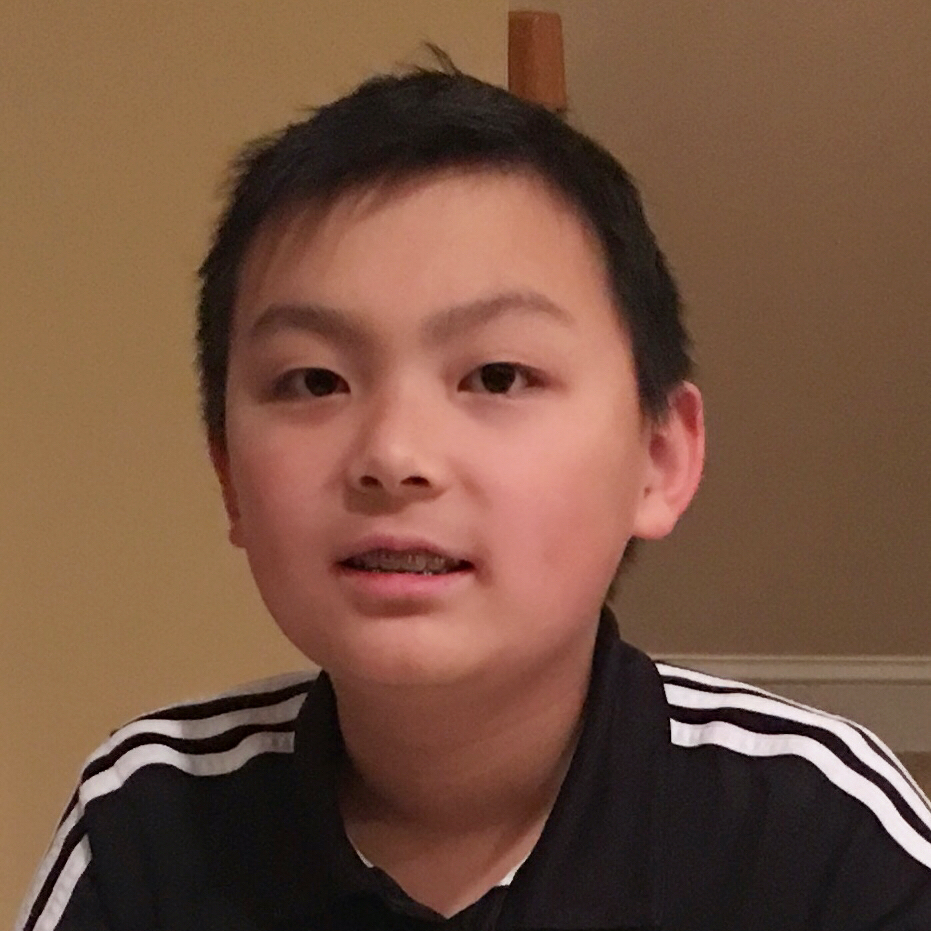
Jeffrey
Jeffrey is a freshman at Montgomery High School. His greatest interest is math, where he has experience with AMC 8, and 10. As a 2-time AIME qualifier, he is also a member of the Lehigh Valley ARML Team and was previously on his school’s MATHCOUNTS team, of which he was captain. In his free time, Jeffrey plays soccer, participates in Science Olympiad, and also spends a lot of time on the computer.
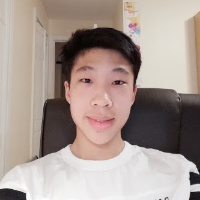
Lancelot
Lancelot is a junior at Montgomery High school. He has a passion for engineering and exploring new and unknown concepts. He is also greatly interested in mathematics, science, and technology. He has experience in Science Olympiad and the AMC 10. He also loves playing golf, computer design, and electronics tinkering.
Satviki
Satviki is a sophomore at Princeton Day School. Some of her main interests are math and computer science/robotics. She especially enjoys critical thinking. In the past, Satviki has competed on her school’s MATHCOUNTS team and has experience with the AMC 8 and 10. In her free time, Satviki often enjoys dancing and also participates in various robotic competitions.
Andrew
Andrew is a junior at Montgomery High School. He has a strong interest in STEM subjects. In particular, he has experience with mathematics, physics, chemistry, and computer science. Competing in these subjects for several years, he has participated in MATHCOUNTS, Math League, AMC 8, 10, and 12, F=ma, USNCO, PACT, and USACO. In addition, he has taken the AP Chemistry course and exam and qualified for AIME. In his free time, Andrew likes to draw, both sketching and painting, practice piano, and play tennis.
Elizabeth
Elizabeth is a junior at Princeton Day School. At PDS, Elizabeth is an active member of the Mu Alpha Theta Honor Society, Latin Club, Science Journal, varsity fencing team, and Science Olympiad team. She loves working with kids and has tutored elementary and middle schoolers in various subjects including math, Latin, and general study skills!
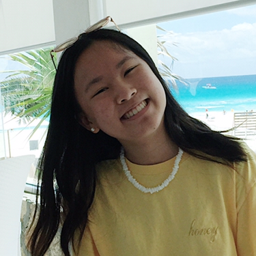
Anny
Anny is a junior at Princeton Day School. She is excited about helping and forging bonds with younger students in her community. She has experience with tutoring middle schoolers and assisting elementary classes. Anny has always had an interest in STEM subjects, earning her the 2018 James B. Pierce Mathematics and Science Award from Chapin School. In her free time, she enjoys participating in Science Olympiad, playing the flute, and creating art.
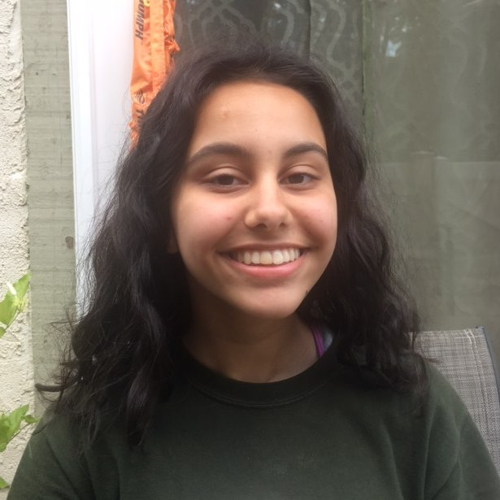
Millat
Millat Husain is a sophomore at WWP High School South. She recently found the right help to spark her interest in math and wishes to help other children achieve their potential in STEM courses. Over the past two summers she has held and overseen art classes for kids in her development. She has experience teaching in a religious Saturday school where she volunteers to share her knowledge with children. In her free time, she enjoys playing sports like field hockey and soccer.
Joyce
Joyce is a sophomore at West Windsor Plainsboro High School South. She has always had an interest in mathematics and has previously attended several math competitions. She has experience teaching as she enjoys dedicating her time to assist in helping younger students develop their public speaking skills. She is part of the Model UN and Red Cross club at her school. In her free time she likes to play the flute and lacrosse.
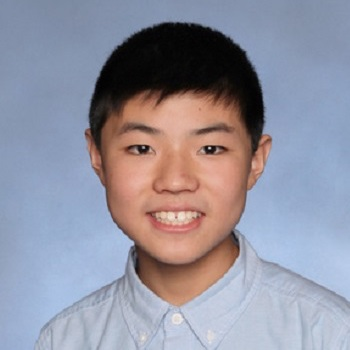
Willie
Willie is a sophomore at Montgomery High School. He has participated in the MATHCOUNTS club and has received numerous awards for the AMC 8, AMC 10, and various other math competitions. He enjoys teaching kids and has been an assistant chess teacher at Huaxia Chinese School and at the Sunflower Summer Camp. In his free time, he enjoys playing chess, tutoring his brother, and designing math programs on his graphing calculator.
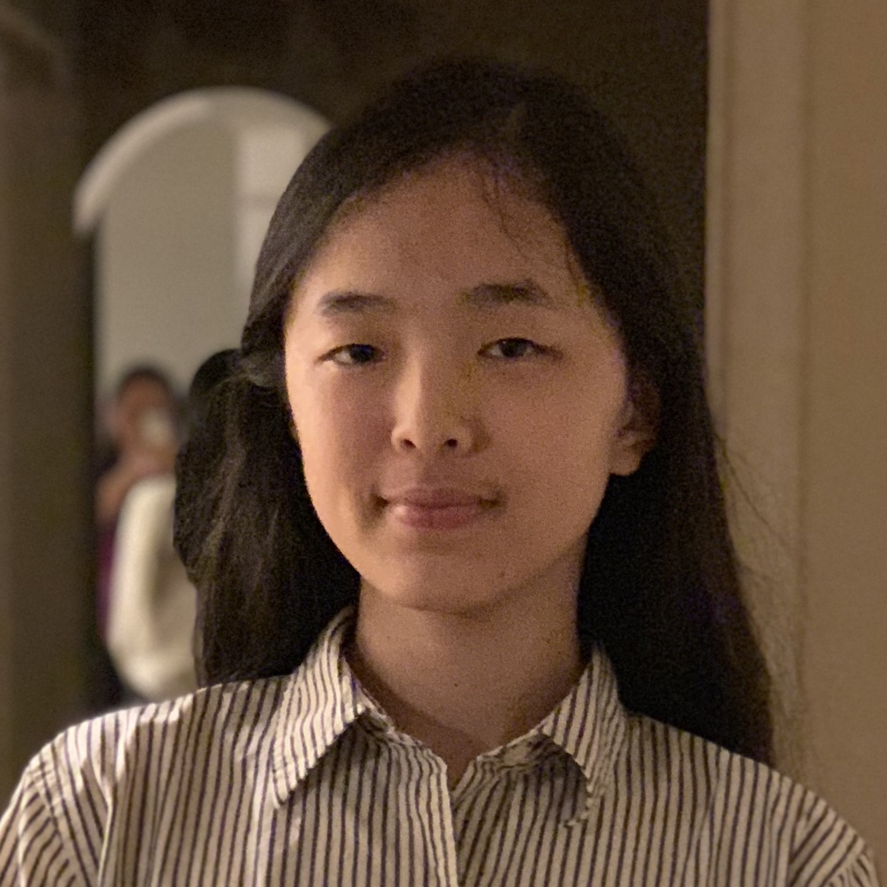
Megan
Megan is a senior at Princeton High School. She has always had a passion for science and math. At PHS, she is an active member of the Tower, Asian American Club, and tech crew. She is excited to create bonds with younger students. Megan has many experiences tutoring younger students in math and science and as a volleyball teaching assistant at Huaxia Chinese School. In her free time, she likes to create art and play volleyball.
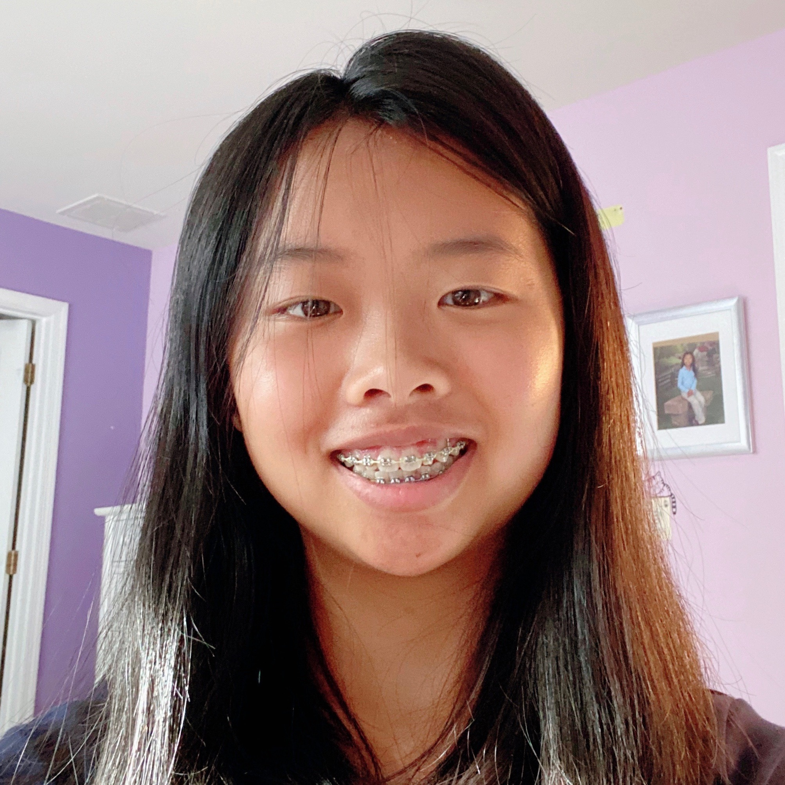
Amy
Amy is a sophomore at Princeton Day School. She has had previous experience with the MATHCOUNTS club and the AMC 10. Her favorite subjects are math and English. She also loves working and teaching kids. Outside of school she is an artist, plays tennis, plays piano and is learning german and chinese.
Timothy
Timothy is a junior attending Princeton Day School, and he has a strong interest in math, science, and music. At PDS he is part of the REX (Research Experience) program that the school offers to selected students who are interested in science, and he has also competed in Princeton Day School’s Science Olympiad team for 2 years. Timothy has experience working as a Junior camp counselor at the PREM school in Thailand, and enjoys helping and working with younger kids. Other than school he enjoys playing the piano and playing the violin in his school's orchestra and chamber group. In his free time he likes to yo-yo, as well as take care of his basil farm.
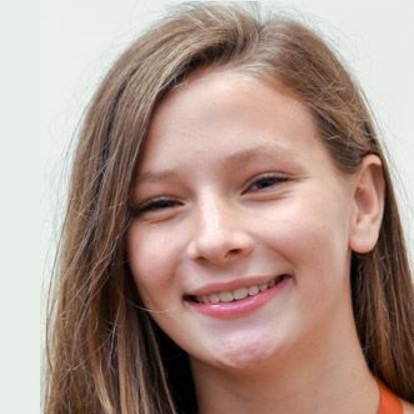
Emma
Emma is a sophmore at Saint Andrew’s School in Middletown, DE. She is on the cross country, swimming, and rowing teams there. Inside the classroom, her favorite classes are math and science as she loves challenging problem-solving based classes. Outside of the classroom, Emma loves to read, bake, and sew.
Jai
Jai is a sophomore at Princeton Day School. At PDS, he competes on the Mathletics and Science Olympiad teams, and he also founded the Foreign Affairs Club. Jai has experience with AMC8, AMC10, and MATHCOUNTS. His favorite subjects are math and computer science. In his spare time, Jai is an avid ping-pong player and enjoys running his blog on politics and international affairs.
Lizzy
Lizzy is a sophomore at Princeton Day School. She loves working with kids and helping them learn new material. Ever since she was little, Lizzy has had a passion for various Art and STEM subjects. She also actively enjoys dancing and golfing in her free time.
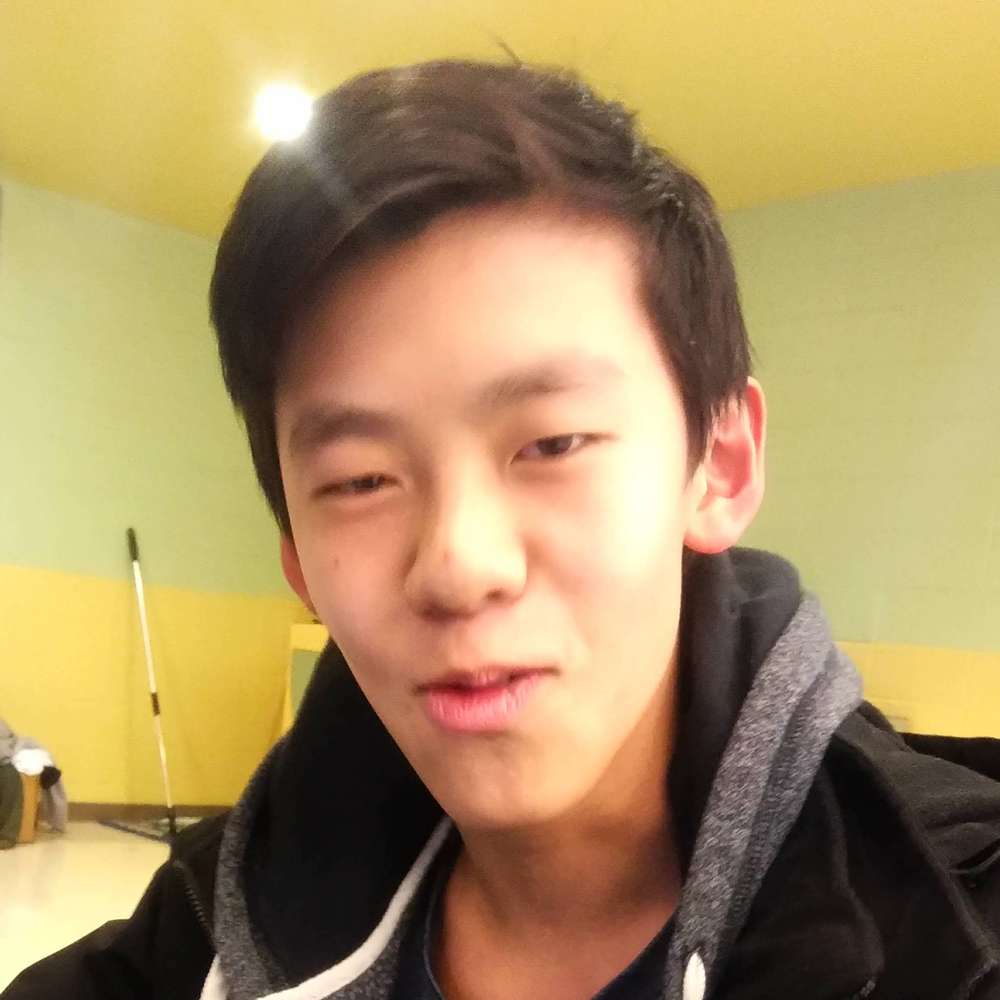
Jonathan
Jonathan is a junior at Montgomery High School. He has always had a passion for helping kids learn, volunteering as a teacher assistant at the local Huaxia Chinese school. He is interested in STEM and Economics and has been an active member of the robotics club and a manager for the business club. Jonathan is part of the varsity swim team and in his free time, likes to skate and ball.
Kevin
Kevin is a sophomore at Montgomery High School. He has always been passionate about math and has participated in AMC 8 and AMC 10. He has experience teaching kids as a teaching assistant at Huaxia Chinese School. In his free time, he enjoys watching and playing soccer.
Seoyoon
Sophomore at St. Andrew's School
Oliver
Sophomore at Princeton Day School
Adele
Sophomore at St. Andrew's School
Jayson
Sophomore at St. Andrew's School
Maisie
Sophomore at The Chapin School
Vaishnavi
Vaishnavi is a sophomore at Princeton Day School. She has always liked math and enjoys working with kids. She is also interested in robotics and has participated in various competitions for it. At PDS, she is a part of the Mock Trial, volleyball, and robotics team.
Sydney
Sophomore at Stuart Country Day School
Julia
Julia is a sophomore at Lawrenceville Prep. She has always loved math and has participated in AMC 8 and 10. At Lawrenceville, Julia is a member of the soccer, basketball, and softball teams. Through sports, she has learned core values of leadership, responsibility, and hard work and has worked with aspiring softball players to improve their game. She hopes to bring these values to the classroom in order to help young kids foster passions for math and develop as students.
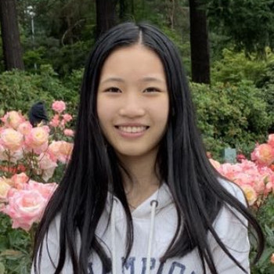
Cynthia
Cynthia is a sophomore at Watchung Hills Regional High School. She is extremely passionate about math and science as well as spreading her knowledge to others. She has had experience in competitions of both subjects. Cynthia has been a dancer throughout her whole life as well as a competitive fencer both in and out of school. From her long sports background, she understands the importance of hard work and practice which can be applied both on the field and in the classroom. She also knows the impact of a good mentor/coach, someone who is always patient and considerate to their students, traits that she hopes to embody when helping the younger kids.
Tanish
Tanish is a junior at Montgomery High School. He has a strong interest in STEM subjects. He has mentored for other organizations like Toastmasters and has a lot of experience with helping kids. He is also part of the Math League in High School and has taken AP STEM courses in high school. In his free time, he likes to play ultimate frisbee and participate in FIRST Robotics.
Catherine
Sophomore at Montgomery High School
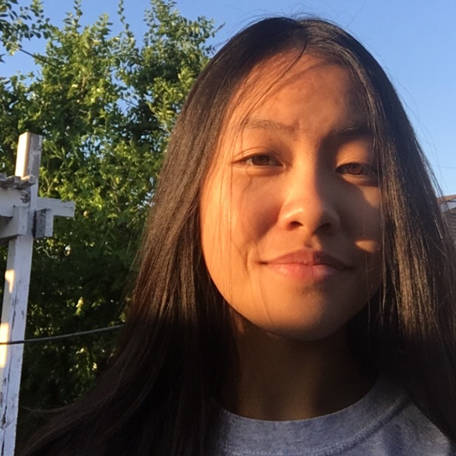
Victoria
Victoria Nguyen is a junior from California who attends Villa Park High School. She has always been interested in math and volunteering. She actively volunteers at Christ Cathedral as a teacher's assistant as well as a retreat leader during the summer, so she has lots of experience working with kids. As of right now, Victoria is Chapter Leader of Ma(s)king a Difference OC where she gets the opportunity to give back to her local community even more. In her free time, she enjoys exploring politics and psychology related topics. Tutoring is a skill and passion of hers that she is excited to make good use of!
Helen
Helen is a sophomore at Saint Andrews school in Delaware. There she rows crew, plays field hockey, and does the winter musical. She is passionate about the arts and environmental science, and would like to encourage more girls to pursue a STEM career. Helen loves mentoring other kids because through her own educational journey she has found how beneficial a friendly guide can be. She also mentors kids through her school in various subjects including Latin, history, and math.
Lydia
Sophomore at Andover
Emily
Sophomore at Stuart Country Day School
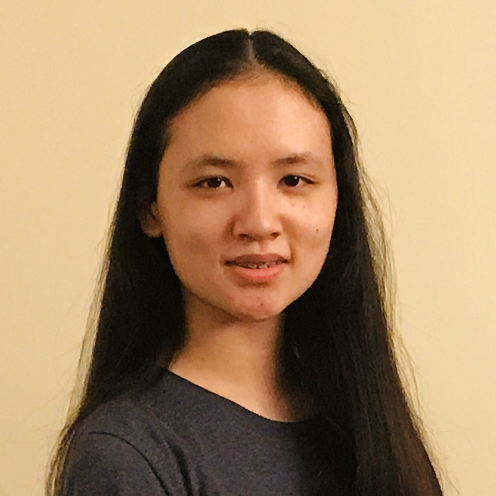
Annie
Annie is currently a sophomore at Montgomery High School. She has a passion for STEM and would love to help younger students in the community feel the same. At MHS, she is a part of Science Olympiad and TEAMS (Tests of Engineering Aptitude, Mathematics, and Science). In her free time, she enjoys learning new things, playing piano, and playing viola.
Ben
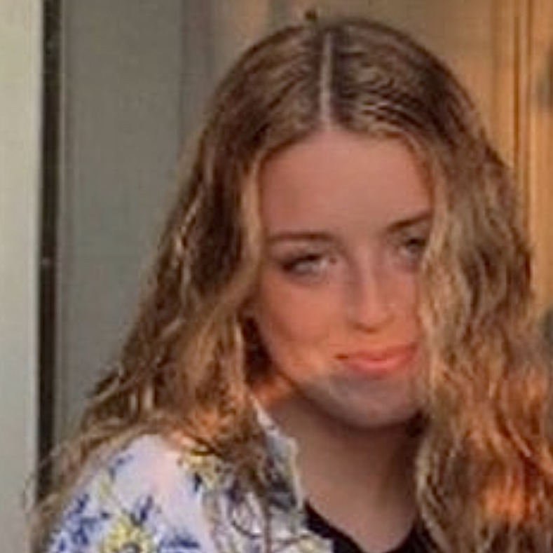
Reed
Reed is a sophomore at Princeton Day School. She loves the idea of helping young kids learn the same things she struggled with when she was their age. She has experience with kids through being a summer camp counselor. She paints and draws, is a part of her school's newspaper, and gardens a lot - both as a volunteer and at home. She is a part of her school's tech crew, tour guide program, and in my school's gallery, red cross, and N.O.W. club. She believes it's incredibly important to get more young girls into the STEM field and that it's important to show how STEM is a really cool thing for everyone.
Jazelle
Sophomore at Princeton Day School

Siya
Siya is a sophomore at Rutgers Prep. She enjoys taking honors level classes of math. At RPS she plays soccer and is a part of the swim team. Her favorite subject is English since it involves analyzing. She has fun solving problems and helping others!
Ayushi
Ayushi is a sophomore at Montgomery High School. She likes to help people in any way possible. Her favorite subjects are math and science and she is also a part of the UNICEF club. Outside of school she plays tennis, does martial arts, and likes to bake.
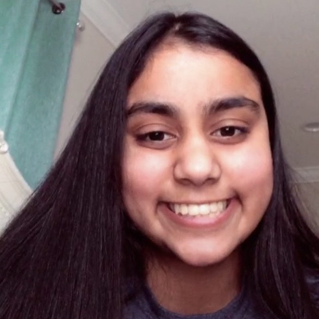
Srihi
Srihi is a sophomore at Montgomery High School. She wants to help younger kids learn and become better at math to help them do well in school. She also plays trumpet in school and is on the basketball team. Outside of school she likes to paint, read and bake.
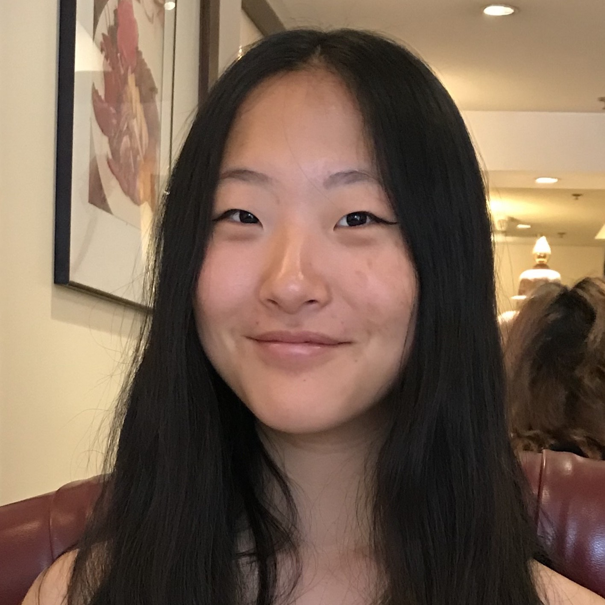
Kim
Kimberly is a sophomore at Montgomery High School. She has experience with MATHCOUNTS and the AMC 10, and was recently recommended for a Math Olympiad team. After having tutored younger students in the past, she hopes that her love of math can help push others to learn and eventually grow fond of the subject. Also being the NJ Representative of the Super Joey Foundation, a charity organization based in California, she's learned means of compassion and patience from helping out those in need. Outside of school, she enjoys playing tennis, listening to true crime podcasts, drawing, and playing the piano.
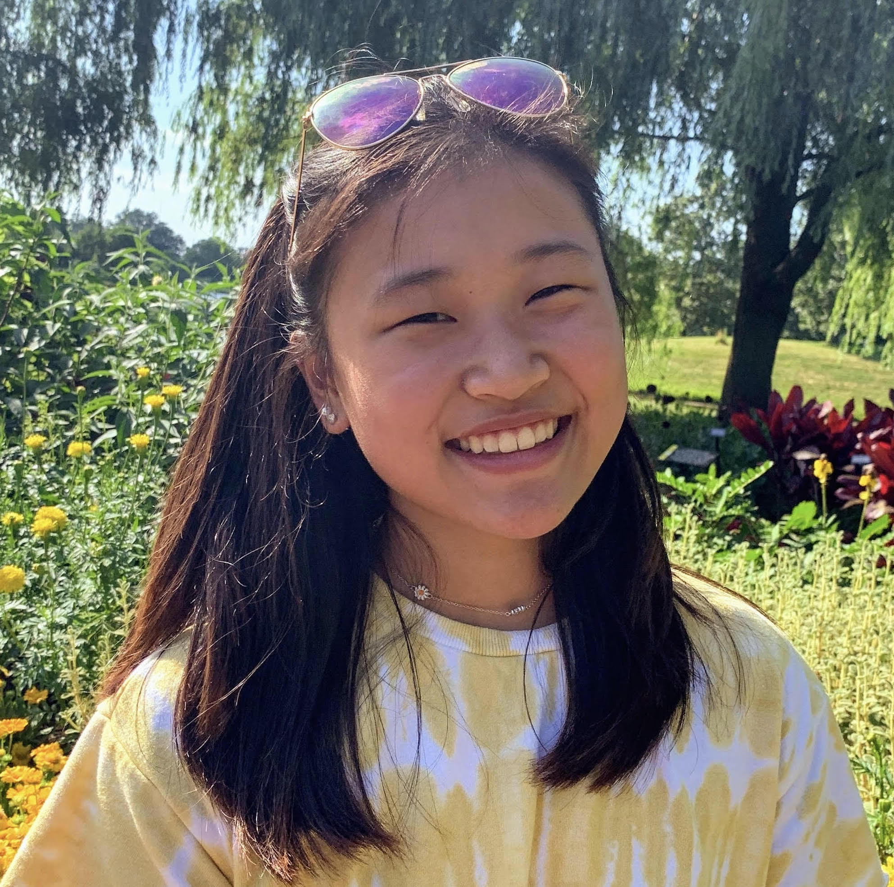
Sarah
Sarah is a sophomore at Libertyville High school. She loves working with kids and she wishes to inspire and encourage children to pursue STEM paths. She enjoys engaging in critical thinking and creative problem solving through chemistry, computer science, physics, and more. She is involved in theater, water polo, swimming, and the school newspaper at her school. In her free time she enjoys reading and painting.
Ashlyn
Freshman at Princeton Day School
Agni
Sophomore at Rutgers Preparatory School
Lauren
Sophomore at Rutgers Preparatory School
Swetha
Freshman at Rutgers University
Krishna
Junior at Rutgers Preparatory School
Rachel
Sophomore at Rutgers Preparatory School
Milind
Junior at Princeton Day School
Niharika
Sophomore at Montgomery High School
Lilu
Sophomore at The Chapin School
Katrina
Sophomore at Princeton Day School
Evan
Evan is a freshman at Princeton Day School who has a grounded interest in STEM. While not engaging as much in competition math in recent years, he has taken awards in the past for competitions such as the Math Olympiad, AMC 8, and has some experience with the AMC 10. Evan believes in math as a way to develop one’s capabilities to logically question and reason, which he seems to employ very often in his life. Outside of math, he enjoys being a zealous pianist (he gets frisson from just about anything), trying his hand at new experiences as he enters high school, being a proud introvert, and developing an interest in biochemistry, which he hopes to take on as a serious passion.
Anagha
Freshman at Princeton Day School
Adhityan
Adhityan Tamilselvan is a sophomore at South Brunswick High School. He is on the school Varsity soccer team and really enjoys spending time with friends and family. He wishes to help young students gain knowledge in math and become successful in school. He also really enjoy working with students.